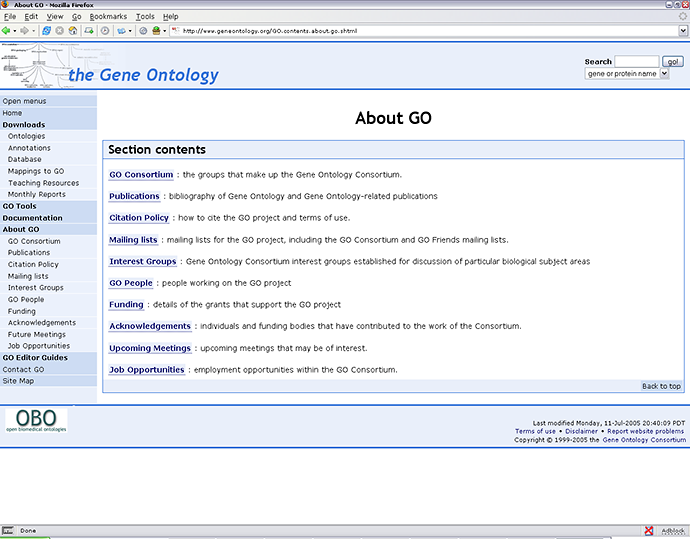

"The Gene Ontology (GO) project is a collaborative effort to address the need for
consistent descriptions of gene products in different databases."
The Gene Ontology Consortium
The principles of GO are similar to that of controlled vocabularies. Both are designed to unify the language with which databases are annotated. While the IntAct controlled vocabulary is concerned with describing molecular interactions, the GO is designed for the annotation of genes and their protein products. The three organizing principles of GO are Molecular Function, Biological Process and Cellular Component. The Gene Ontology Consortium has an comprehensive website clearly explaining their usage, for further information please may we direct you to their website by clicking on the image below.

|